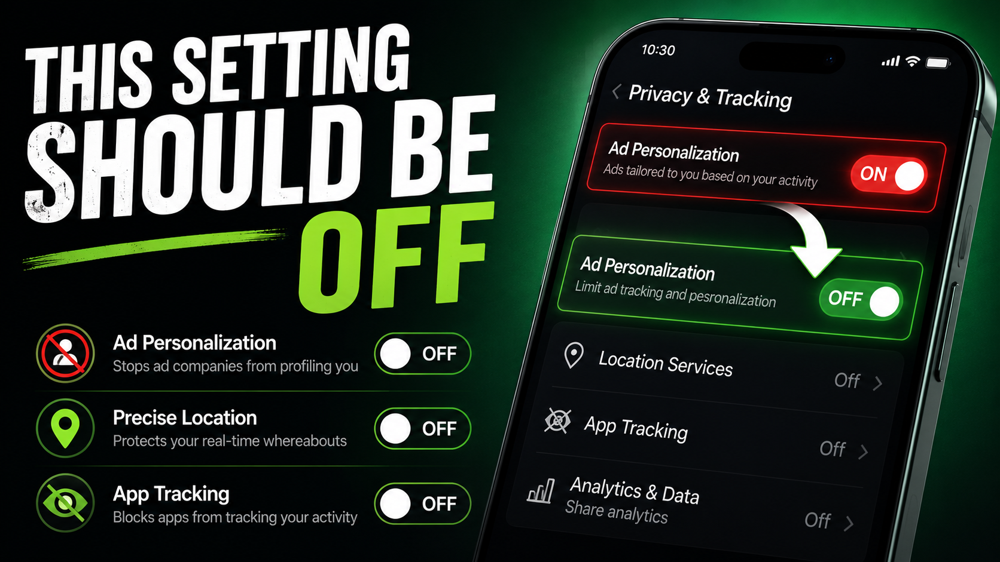

You buy a brand new smartphone. You power it on, rapidly click Agree on the twelve different terms of service pages, and start downloading your favorite apps.
A week later you are sitting with a friend. You casually mention that you are thinking about buying a new espresso machine. You never searched for it. You never texted anyone about it. But the very next morning, your social media feed is flooded with ads for espresso machines.
You think your phone is secretly listening to your voice. The reality is actually much worse. Your phone does not need to listen to you, because it already knows everything about your life.
Every single day, millions of smartphone users walk around with a digital spy in their pockets. We put tape over our laptop webcams, yet we completely ignore the massive data harvesting operation happening silently in the background of our mobile devices.
Today, we are exposing the billion dollar industry of hidden mobile tracking, and showing you exactly how to flip the switch and take your privacy back.
The Shadow Profile Problem
Tech giants and third party data brokers do not need to record your voice. Instead, they rely on a complex web of aggregated data points to predict your behavior with terrifying accuracy. Just like how hackers hide malware in images (as seen in the WhatsApp Fake PNG Virus), these data trackers operate completely unseen in the background.
They know where you sleep, where you work, how fast you drive, and how long you look at specific posts on social media. They know that your friend, who you spend hours with every week, recently searched for espresso machines. The algorithm simply connects the dots and serves you the ad.
The Ad Personalization Trap
Deep inside the settings of almost every modern smartphone is a feature called Ad Personalization or Usage Tracking. It is turned on by default. This setting gives your phone blanket permission to package your daily habits into a neat little file and auction it off to the highest bidder in milliseconds, a vulnerability often exploited in dangerous AI scams.
How Free Apps Actually Make Money
Have you ever wondered how that free flashlight app, weather widget, or document scanner manages to stay in business? Developing apps costs money. If you are not paying a subscription fee, you are paying with your personal identity.
These apps often include hidden tracking pixels and SDKs that scrape your clipboard, monitor your location, and read your device identifiers. They take this massive haul of data and sell it to data brokers.
Stop The Data Leak: What You Must Do Now
You can instantly cut off the supply of your personal data by changing a few crucial settings that phone manufacturers try to hide from you.
The 3 Minute Privacy Sweep
Take out your phone right now and make these critical changes to stop background tracking.
- Turn Off Ad Tracking: Navigate to your privacy settings and disable Personalized Ads or Limit Ad Tracking. This stops companies from building a persistent profile on you.
- Revoke Location Access: Go through your app list. Does a simple calculator or photo editor really need your precise GPS location? Change the permission to Never or Only While Using.
- Stop Uploading Documents: Never use free apps that require you to upload your sensitive files to their cloud servers just to perform simple tasks.

The Client-Side Revolution
The only true way to protect your data is to use tools that never ask for it in the first place.
This is why the developer community is moving toward Client Side Processing. When you need to compress a tax document, you should not be uploading it to a random server. That is why we built our Compress PDF tool and our Image to PDF converter to run entirely locally. Your web browser does all the heavy lifting using your own RAM, meaning zero bytes of data ever leave your device.
Your privacy is your fundamental right. Stop accepting the default settings, start questioning free apps, and always prioritize tools that respect your digital boundaries.
People Also Ask (FAQs)
Is my smartphone listening to my conversations?
While it feels like your phone is listening, tech companies usually do not record your voice 24/7. Instead they track a massive web of data points like your location, search history, and app usage to predict exactly what you are thinking and talking about.
What is Ad Personalization and should I turn it off?
Ad Personalization is a setting that allows companies to build a profile of your interests based on your activity. Turning it off stops them from targeting you with highly specific ads, though you will still see generic advertisements.
How do free websites and apps make money?
If a product is entirely free, you are the product. Free apps make money by silently harvesting your usage data and selling it to third party data brokers. This is why you should always prioritize client side tools that do not upload your data.
How can I protect my personal documents on my phone?
Never upload your ID cards or bank statements to random free apps. Instead, use strict client side tools for tasks like PDF compression or converting HTML to images, ensuring your files never leave your devices local memory.
Does turning off Location Services completely stop tracking?
No. Even with Location Services turned off, your phone can still approximate your location using nearby Wi-Fi networks, Bluetooth beacons, and cell tower triangulation. Turning off Location Services only stops apps from getting your precise GPS coordinates.
Are iOS devices more secure than Android devices?
While Apple heavily markets iOS as a privacy-first platform, both operating systems collect vast amounts of diagnostic and usage data by default. You still need to manually review your App Tracking Transparency and Location settings on iOS.
Can data brokers see the photos on my phone?
Generally, data brokers cannot see your local photos unless you explicitly grant a shady app permission to access your photo gallery. However, if you upload photos to free online tools, those images may be analyzed and sold. Always use client-side image converters.
How do I know if an app is selling my data?
If an app is completely free, does not offer a paid version, and requires permissions that have nothing to do with its function (like a calculator asking for your location), it is almost certainly harvesting and selling your data.